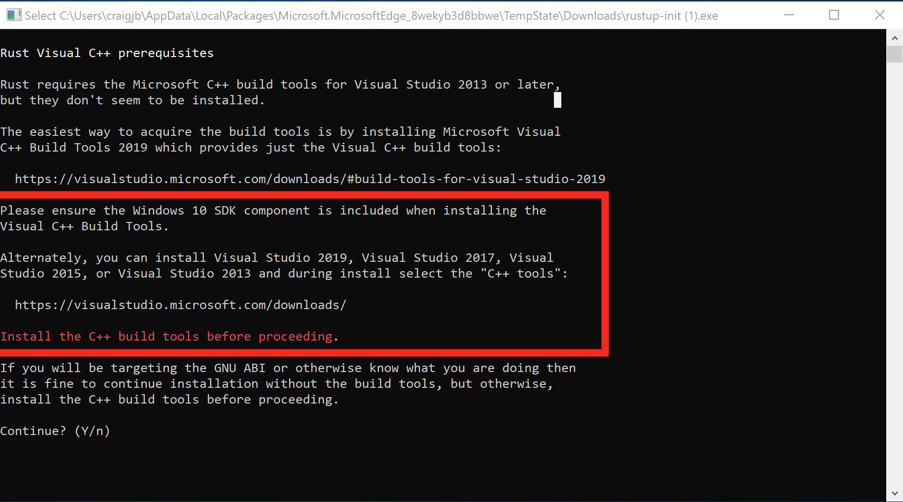

Sobel Edge Detection
Rust is a systems language pursuing the trifecta: safety, concurrency, and speed. This makes it well suited to machine learning and data science tasks. Rust experience will not be required, only existing programming experience.
We'll spend half the session on a with an introduction to Rust and the rest using functional programming style to develop a machine learning primitive called Convolve which can be used for many tasks including edge detection, sharpening, blur and more.
Our main goal will be the Sobel operator. In a Sobel operator pixels in an image are 'convolved' with the Sobel kernel to produce an output that highlights edges.

Convolution is an incredibly common machine learning operation and maybe you'll walk away understanding a little more about whats going on in convolutional neural networks.
Installing Rust with Rustup
-
Visit rustup.rs, download, and then run rustup-init.exe

-
Make sure you have the dependencies met. The Rust installation includes the Rust compiler, but Rust uses the system linker to create the final executables and link to system shared libraries (DLLs). So, we have to make sure a usable linker and system libraries are installed.
- If you already have one of the listed Visual Studio versions installed with C++ build tools, the dependencies should be met already
- If later you get an error about "Link.exe", follow step 2
- Otherwise, install these:

- If you already have one of the listed Visual Studio versions installed with C++ build tools, the dependencies should be met already
-
Press
1and thenenterto proceed with the installation
-
Once the installation is complete, the below message should show. Press
enterto close the window.
-
Test the rustup installation:
- Open a new command prompt window
- Run the command
rustup. The command should show help information.

- If the
rustupcommand fails, add%USERPROFILE%\.cargo\binto yourPATHenvironment variable.
-
Install the Rust Language Server (RLS):
- Open a command prompt window (you can reuse the same window)
- Run the command
rustup component add rls. The command should download and install the RLS.

- Install the rustfmt component by running the command
rustup component add rustfmt

Choosing your editor
You only need one of the following editors, or another if you prefer a different one, but the goal is for you to have RLS and Code Formating (rustfmt) installed and enabled.
Configuring GVim 8.x for Rust with the RLS
The steps below configure GVim 8.x on Windows to support Rust and use the Rust Language Server (RLS) for autocompletion.
- Make sure you have a working Git installation. (Download Here for Windows)
- Visit https://rls.booyaa.wtf and follow the steps for your preferred Vim package management strategy.
- Modify your vimrc to include the below snippet. The guide linked in the previous step is still configured to use the Rust nightly build, since the RLS used to only be available in the nightly builds. RLS is now available in stable, and we installed stable Rust (the default). The below snippet should replace the one from the linked guide, and changes the 'cmd' to use stable instead of nightly.
if executable('rls')
au User lsp_setup call lsp#register_server({
\ 'name': 'rls',
\ 'cmd': {server_info->['rustup', 'run', 'stable', 'rls']},
\ 'whitelist': ['rust'],
\ })
endif
-
Make sure
filetype plugin indent onandsyntax enableand lets add format on save as well likelet g:rustfmt_autosave = 1 -
Restart GVim or reload your vimrc
-
Open a Rust file and test our autocompletion (for example start typing
use std::)
Configuring VS Code for Rust with the RLS
The steps below configure VS Code on Windows to support Rust and use the Rust Language Server (RLS) for autocompletion and incremental compilation to display warnings and errors.
-
Install the Rust (rls) extension by user 'rust-lang' in VS Code. There are several other plugins, but this one is the most maintained.
-
Reload the window in VS Code, or restart VS Code
-
If you see an error message that the RLS could not be started or that the extension could not find rustup, then you will have to configure VS Code's path for rustup:
-
Open VS Code preferences and navigate to the Rust extension preferences
-
Modify the rustup path to use an absolute path to your installation:
C:\Users\<username>\.cargo\bin\rustup
-
Reload the window in VS Code, or restart VS Code
-
You may see a prompt in the lower-right to install the RLS. If so, click yes.
-
-
Open a Rust file and test out the RLS:
- Try autocompletion (for example start typing
use std::) at the top of a file - Try the incremental compilation (for example
println!("Hello, world!") blah blah 42 42should show an inline error)

- Try autocompletion (for example start typing
-
Enable format on save in VScode settings. Code->Preferences->Settings->Text Editor->Formatting->Format On Save
Installing Rust with Rustup
- Visit rustup.rs, to install the rust toolchain.
Choosing your editor
Whatever editor you choose, the goal is for you to have RLS and Code Formating (rustfmt) installed and enabled. VSCode is a mature and populare solution for Rust.
Configuring VS Code for Rust with the RLS
The steps below configure VS Code on Mac to support Rust and use the Rust Language Server (RLS) for autocompletion and incremental compilation to display warnings and errors.
-
Install the Rust (rls) extension by user 'rust-lang' in VS Code. There are several other plugins, but this one is the most maintained.
-
Reload the window in VS Code, or restart VS Code
-
If you see an error message that the RLS could not be started or that the extension could not find rustup, then you will have to configure VS Code's path for rustup:
-
Open VS Code preferences and navigate to the Rust extension preferences
-
Modify the rustup path to use an absolute path to your installation:
C:\Users\<username>\.cargo\bin\rustup -
Reload the window in VS Code, or restart VS Code
-
You may see a prompt in the lower-right to install the RLS. If so, click yes.
-
-
Open a Rust file and test out the RLS:
- Try autocompletion (for example start typing
use std::) at the top of a file - Try the incremental compilation (for example
println!("Hello, world!") blah blah 42 42should show an inline error)
- Try autocompletion (for example start typing
-
Enable format on save in VScode settings. Code->Preferences->Settings->Text Editor->Formatting->Format On Save
Installing Rust with Rustup
- Visit rustup.rs, to install the rust toolchain.
Choosing your editor
Whatever editor you choose, the goal is for you to have RLS and Code Formating (rustfmt) installed and enabled. VSCode is a mature and populare solution for Rust, but Vim is usable as well.
Configuring vim 8.x for Rust with the RLS
The steps below configure vim 8.x to support Rust and use the Rust Language Server (RLS) for autocompletion.
- Make sure you have a working Git installation
- Visit https://rls.booyaa.wtf and follow the steps for your preferred Vim package management strategy.
- Modify your vimrc to include the below snippet. The guide linked in the previous step is still configured to use the Rust nightly build, since the RLS used to only be available in the nightly builds. RLS is now available in stable, and we installed stable Rust (the default). The below snippet should replace the one from the linked guide, and changes the 'cmd' to use stable instead of nightly.
if executable('rls')
au User lsp_setup call lsp#register_server({
\ 'name': 'rls',
\ 'cmd': {server_info->['rustup', 'run', 'stable', 'rls']},
\ 'whitelist': ['rust'],
\ })
endif
-
Make sure
filetype plugin indent onandsyntax enableand lets add format on save as well likelet g:rustfmt_autosave = 1 -
Restart vim or reload your vimrc
-
Open a Rust file and test our autocompletion (for example start typing
use std::)
Configuring VS Code for Rust with the RLS
The steps below configure VS Code on Mac to support Rust and use the Rust Language Server (RLS) for autocompletion and incremental compilation to display warnings and errors.
-
Install the Rust (rls) extension by user 'rust-lang' in VS Code. There are several other plugins, but this one is the most maintained.
-
Reload the window in VS Code, or restart VS Code
-
If you see an error message that the RLS could not be started or that the extension could not find rustup, then you will have to configure VS Code's path for rustup:
-
Open VS Code preferences and navigate to the Rust extension preferences
-
Modify the rustup path to use an absolute path to your installation:
C:\Users\<username>\.cargo\bin\rustup -
Reload the window in VS Code, or restart VS Code
-
You may see a prompt in the lower-right to install the RLS. If so, click yes.
-
-
Open a Rust file and test out the RLS:
- Try autocompletion (for example start typing
use std::) at the top of a file - Try the incremental compilation (for example
println!("Hello, world!") blah blah 42 42should show an inline error)
- Try autocompletion (for example start typing
-
Enable format on save in VScode settings. Code->Preferences->Settings->Text Editor->Formatting->Format On Save
Anatomy
We’ve got a few tools to get to know
- rustup - manage tools and versions of toolchains
- rustc - rust compiler
- cargo - manage modules locally and remotely and drives rustc
EXERCISE: Open a terminal and create a new package with cargo new training and go to that directory with cd training
Now we have a Cargo.toml which defines our project, not unlike a package.json if you're familiar with Node.js, it defines dependencies we're using and other project information:
[package]
name = "training"
version = "0.1.0"
authors = ["First Last"]
edition = "2018"
[dependencies]
In src folder we have main.rs, a Rust file. In this case it generated a simple hello world.
fn main() { println!("Hello, world!"); }
We're starting to get some syntax for you. Notice functions are denoted fn, we use semicolons to end expressions, and the exclamation after println!() means that is a function-like macro. We'll talk more about macros later.
Generally we'll interact with the compiler via Cargo. Cargo drives the rustc compiler and linker all under the hood. We can cargo build or better yet cargo run and save ourselves a step:
$ cargo run
Compiling training v0.1.0 (/Users/firstlast/training)
Finished dev [unoptimized + debuginfo] target(s) in 0.50s
Running `/Users/firstlast/.cache/target/debug/training`
Hello, world!
The default build directory is target, and by default we got a debug build
$ ls target/debug/
build examples native training.d
deps incremental training training.dSYM
Note, we could run or debug that built asset directly:
./target/debug/training
Hello, world!
Also note, we could have compiled this simple file with the rustc compiler directly
$ rustc src/main.rs
$ ./main
Hello, world!
However in practice almost no projects are single files require merging multiple modules from within our project and without and thus Cargo is THE way we interact with Rust.
Data types
We’ve got all the datatypes you would expect but you might want to glance through the Rust book chapter on variables, functions, and control flow just to update your mental models to Rust notation
We have signed and unsigned scalar types like u32 and i32 and we've got Strings. Variables are instantiated with let syntax, and notably are immutable by default.
The top of the Rust standard library page has a search box. Entering String there we find std::string::String with a bunch of example usage right there for us. You can edit those examples and run them right in your browser to confirm your understanding and even click the [src] link in the upper right corner and be taken straight to the Rust implementation.
While you totally can thrash around on stack overflow, and we all do, there really is an authoritative source that you should check first.
From that example we have our String constructor.
fn main() { let input_path = String::from("valve.png"); println!("{:?}", input_path); }
First, note we don’t need to import anything (we call it use) to use this String type. A portion of the standard library is in our namespace automatically, which we call the prelude. Basically Rust puts use std::prelude::v1::*; at the top of your file and you get access to those members. By no means is everything in there, but a lot is, which is what kept you from explicitly writing use std::string::String at the top of your file in this case. The println! macro came from there as well. You don't have to for this tutorial, but if you wanted to install a cargo tool called cargo-expand you could see the end result of your code with all macros and preludes included but before it has been optimized to machine code.
$ cargo install cargo-expand
..
$ cargo expand
#![feature(prelude_import)]
#[prelude_import]
use std::prelude::rust_2018::*;
#[macro_use]
extern crate std;
fn main() {
let input_path = String::from("valve.png");
{
::std::io::_print(::core::fmt::Arguments::new_v1(
&["", "\n"],
&match (&input_path,) {
(arg0,) => [::core::fmt::ArgumentV1::new(arg0, ::core::fmt::Debug::fmt)],
},
));
};
}
$
Also notice we didn't have to explicitly type our variable. What Rust can figure it out, it will and so its entirely idiomatic to omit type annotations. However if you or the compiler are having trouble or getting odd type errors, start annotating some of your types like to see if you can give the compiler a hand. Its also a great way to figure out what type you actually have in case you're not sure, let the compiler (or linter) tell you.
fn main() { let input_path = String::from("valve.png"); let output_path:String = String::from("valve_sobel.png"); println!("Hello, world!"); }
So now how to print those variables to console. In Rust our printf % formatting character is {}. Following the println!() documentation down the rabbit hole will send us to the formatters section page and we find all the formatters which you would expect like hex {:x}, binary {:b}, etc. We're going to focus on the 'empty' Display formatter {} for now which is a kind of a pretty printer in Rust. As long as whomever wrote our type implemented the Display pretty printer trait this will work great (cue ominous music).
fn main() { let input_path = String::from("valve.png"); let output_path = String::from("valve_sobel.png"); println!("{} {}", input_path, output_path); }
Running this we find that we do have a Display implementation for String and pretty printing results in rather clean output in this case:
valve.png valve_sobel.png
Objects, we call them structs, should be very familiar. You can define a new struct in any scope you like and we can name and type their members.
struct Opt { input_path: String, output_path: String, } fn main() { let options = Opt { input_path: String::from("valve.png"), output_path: String::from("valve_sobel.png"), }; println!("{} {}", options.input_path, options.output_path); }
EXERCISE: Get this all implemented in your training project.
Notice we access our struct members with dot notation, and there is no default new constructor or overloading in Rust. Though in practice, for functions where it makes sense many developers will offer and occasionally make their struct private to require the usage of a new or other constructor. So note, String::new() totally exists and would have made you an empty string.
Lets start modularizing our main by putting our options creation in a function. Function syntax is just like we see in the main function, but can return an expression from a function by leaving off the semicolon and annotating the return type.
struct Opt { input_path: String, output_path: String, } fn options() -> Opt { let options = Opt { input_path: String::from("valve.png"), output_path: String::from("valve_sobel.png"), }; return options; } fn main() { let options = options(); println!("{} {}", options.input_path, options.output_path); }
We use semicolons to end expressions. We prefer to leave off semicolons in order to implicitly return the expression saving us the temporary variable like so.
fn options() -> Opt {
Opt {
input_path: String::from("valve.png"),
output_path: String::from("valve_sobel.png"),
}
}
EXERCISE: Implement the options() function to clean up your main.
But what if our options creation could fail? Lets talk about error handling in rust.
Option and Result
Let's take our config options from the command line with runtime args instead of hard coding it at compile time. Search the standard library for args finds args come in as a iterator of a collection. We'll talk about iterators later, but for now we can for loop over them, or get the nth() value. Just like C command line args the 0th argument is the name of the binary and the rest are your arguments.
use std::env; // explicit use (import) finally
fn options() -> Opt {
Opt {
input_path: env::args().nth(1).unwrap(),
output_path: env::args().nth(2).unwrap(),
}
}
And then note you can pass args around cargo to the binary were trying to run like:
$ cargo run -- valve.png valve_sobel.png
Finished dev [unoptimized + debuginfo] target(s) in 0.01s
Running `target/debug/training valve.png valve_sobel.png `
target/debug/training
valve.png
valve_sobel.png
So what is this unwrap. The problem is the nth argument may or may not be there...
We have two related types commingled in error handling in Rust.
Rust doesn’t have exceptions, but rather the Result type which can be used to propagate either the error or the result and looks like this:
And Rust doesn't have Null but rather the Option type which can be used to propagate either the value (Some), or the lack of one (None)

Were going to skip Result here, as our nth() method returns an Option, but they’re very similar in how they’re handled as they’re both implemented as enums. We basically have three possibilities for dealing with both:
Option 1, panic! unwrap and expect
There is a minimal runtime in Rust, which means if were not careful we can and will blow up at runtime. This is called a panic and is handled in the panic handler, which on hosted platforms includes unwinding and backtraces. You can fire it on purpose with panic!() or by unwrap() on a None or Err value.
EXERCISE: Run our program again, this time not passing any command line arguments.
thread 'main' panicked at 'called `Option::unwrap()` on a `None` value', src/libcore/option.rs:347:21
note: run with `RUST_BACKTRACE=1` environment variable to display a backtrace.
Explicitly panicing like we see above may very well be an option when the error is unrecoverable anyway like in examples like this where theres nothing intelligent we can do except maybe try to print a decent error message. If the error message needs help well often well use .expect("Please enter an image file as the first option to this program") instead of unwrap() in order to further refine the message.
Option 2, return it
Another option is to make it someone else’s problem by simply handing the Option or Result back up the chain.
Theres even an early return helper for this, the ? operator. This was previously the try! macro but that has been deprecated though you may still see it in code.
Our nth() is an Option of Some or None so lets just hand an optional back up the chain to our main function. At least this way we can decide what to do with it there.
fn options() -> Option<Opt> { //<-return Option wrapping our Opt struct
Some(Opt { //<-Now we wrap our good return in Some
input_path: env::args().nth(1)?, //<-unwrap becomes ? early return of None
output_path: env::args().nth(2)?, //<-unwrap becomes ? early return of None
})
}
EXERCISE: Have our options function return an Option of Opt.
But we still get an error up in main now.
error[E0609]: no field `input_path` on type `std::option::Option<Opt>`
--> src/main.rs:93:44
Were passing an Option back to main, but now we need to deal with it there
option 3, handle it
Someone has to do some control flow on this error somewhere.. Well thats actually not true, we can even return these from the main function where Rust will unwrap them behind the scenes and print the result, but generally if you can do control flow on your errors you should.
We often will often match Options and Results with the match pattern which is very similar to an exhaustive switch statement.
These two solutions are equivalent as they both panic if we don't get a good value. However you can easily see how you will be using match if you need to take some positive action on bad values.
let options = options().unwrap();
println!("{} {}", options.input_path, options.output_path);
let options = match options() {
Some(val) => val,
None => panic!("Please enter an image file as the first option to this program"),
};
println!("{} {}", options.input_path, options.output_path);
EXERCISE: Implement one of these solutions to satisfy the Rust compiler.
The Option type is actually an enum type so we lets take a full digression through enums and matching in the next section.
error handling playground
Its worth spending some time in the option result playground here to get your mind around all this.
use std::io::ErrorKind; fn main() { // lets just make some values we might have gotten back from a function call let first_arg = Some("valve.png"); let second_arg: Option<String> = None; let good_val: Result<u32, std::io::ErrorKind> = Ok(22); let definitely_error: Result<u32, std::io::ErrorKind> = Err(ErrorKind::Other); // Use unwrap to get access to the underlying value println!("{:?}", first_arg.unwrap()); println!("{:?}", good_val.unwrap()); // println!("{:?}", second_arg.unwrap()); //no good match first_arg { // this is the one that will match, as first_arg is a Some Some(val) => println!("first_arg: {}", val), // we dont get here for this program None => { // <- Note the block scope here so we can have more expressions println!("what the"); panic!("oops"); } } // as we've said, results are very similar, just two different variants match definitely_error { // this is the one that will match, as definitely_error is an Err Err(e) => println!("{:?}", e), // we dont get here for this program Ok(val) => println!("cant imagine how we got here: {}", val), }; // the revealing/destructuring pattern is really handy occasionally if let Some(val) = first_arg { println!("Gotem {:?}!", val); } // theres also a ton of combinators in the standard library // lets say we didnt care about the value, but wanted to check the success if good_val.is_ok() && definitely_error.is_err() { println!("some convoluted example here"); } }
external dependencies, crates.io
Lets have our code load in an image from the filesystem. Searching in the standard library for images doesn't find anything, we could take a File to binary, but lets go to the community ecosystem, crates.io. Searching there for images finds a crate image with ~1mil downloads which seems to be pretty popular. image says it wants us to add it to our Cargo.toml dependencies section so lets do that.
[dependencies]
image = "0.22.1"
The Cargo toml manifest version field we learn Cargo uses semantic versioning which allows us to version and lock dependencies at the level of risk were comfortable with. From the spec:
Given a version number MAJOR.MINOR.PATCH, increment the:
MAJOR version when you make incompatible API changes,
MINOR version when you add functionality in a backwards compatible manner, and
PATCH version when you make backwards compatible bug fixes.
The Cargo chapter on dependencies explains more how to do this locking. The three digit version we used above is the same as a caret requirement as if we had type image = "^0.22.1". With this requirement Cargo is allowed to use any version it can satisfy between the range >=0.22.1 <0.3.0 Semver works different below and above 1.0 with the idea that theres more breaking churn below 1.0. So for a fictional image = "^1.2.3" Cargo would be allowed to find patches >=1.2.3 <2.0.0. Refer to the spec and the book for many more clarifying examples.
Loading the input image
Now in main.rs we can use this dependency. To start, let's just write the input to the output, passthrough, using the image create we looked at earlier.
use image;
let options = options().expect("Failed to parse command options!");
let input_image = image::open(&options.input_path)
.expect("Failed to open input image file");
input_image.save(&options.output_path)
.expect("Failed to save output image to file");
Repeatedly using the same variable name, called shadowing, is often even encouraged, as it means less messy temporary variables.
Converting to grayscale (or luma)
In our next section we're going to need an image in grayscale, with one value per pixel. Converting an RGB image to grayscale requires specific weights per component, but luckily the image create already implements this for us. We just need to figure out how to use it. Let's take a look at the docs again.

to_luma() method
From looking at the docs on image::open we now know that it returns a DynamicImage type. If we peek at the DynamicImage docs we'll find a function called to_luma(), which is exactly what we want. Notice it returns a different type, GrayImage.
Since types and abstractions in Rust don't incur overhead, it's pretty typically to use more types than less to represent different possible data structures and formats. This not only makes code clear to the reader, but also allows the compiler to help you enforce invariants.
For example, we can make our processing code later only accept GrayImage as input, which makes sure the caller has converted any inputs.

let input_image = image::open(&options.input_path)
.expect("Failed to open input image file");
let input_image = input_image.to_luma();
input_image.save(&options.output_path)
.expect("Failed to save output image to file");
Borrowing
The borrow checker is probably Rust's most distinctive feature. To enable zero cost abstractions, Rust does not have a garbage collector. However, Rust also doesn't rely on explicit calls to free() like C. Instead Rust enforces "ownership" for all memory objects. The rules of the ownership system are pretty simple:
-
There is only ever one owner of a memory object at a time (struct, enum, primitive, etc)
-
Immutable (read-only) ownership can be borrowed multiple places simultaneously
-
Mutable (writable) ownership can only be borrowed once at a time and exclusively
-
An object must live at least as long as all of its borrows
Rule #1: single owner
fn eat(s: String) { println!("Eating {}", s); } fn main() { let food = String::from("salad"); eat(food); eat(food); }
The compiler error tells us exactly what's wrong. The fn eat(s: String) signature says that s will be moved into the function upon calling. In other words, the function eat will take ownership of s. Unless we pass ownership back to the caller, ownership will remain there. This is called "consuming" a parameter.
Here's how we can pass ownership back.
fn eat(s: String) -> String { println!("Eating {}", s); s } fn main() { let food = String::from("salad"); let owned_food = eat(food); eat(owned_food); }
Rule #2: multiple immutable borrows
If we change the function signature to borrow s instead, the problem goes away.
fn stare_at(s: &String) { println!("Drooling over {}", s); } fn main() { let food = String::from("donut"); let another_ref = &food; stare_at(&food); stare_at(&food); stare_at(another_ref); }
Rule #3: mutable borrows are exclusive
Only a mutable borrow for an object can exist at a time. This prevents many subtle errors where internal state is mutated while other does not expect it. In C++, modifying a container while iterating through it is a classic example.
fn main() { let mut number: usize = 32; let borrowed = &number; println!("Borrowed: {}", borrowed); let mut_borrowed = &mut number; *mut_borrowed = 59; println!("Mut borrowed: {}", mut_borrowed); println!("Borrowed: {}", borrowed); }
You'll notice the compiler gave us an error because we have an immutable borrow out there when we try to mutably borrow number. Any additional borrows, mutable or not, will make a mutable borrow invalid.
When we have an exclusive mutable borrow, all is good.
fn main() { let mut number: usize = 32; let mut_borrowed = &mut number; *mut_borrowed = 59; println!("Mut borrowed: {}", mut_borrowed); }
Rule #4: lifetime >= borrow time
In the example below, we borrow a temporary value inside the if statement branches. The temporary value does not last beyond the if statement branch, so the compiler tells us that our borrow is invalid. We can't borrow an object that doesn't exist.
fn main() { let borrowed = if 1 + 1 == 2 { let msg = "The world is sane."; &msg } else { let msg = "The world is insane!"; &msg }; }
The learning curve
Many new Rustaceans report that the fighting the borrow checker is the hardest part of learning Rust, and kind of like hitting a wall. Programmers coming from C/C++ tend to have a hard time because they know exactly what they want to do, but the Rust compiler "won't let them do it".
Over time, the borrowing rules and working with the borrow checker become second nature. In fact, the borrow checker enforces rules that well-written C++ code should abide by anyway. Working with the borrow checker is kind of like pair programming with a memory ownership expert.
The borrowing rules prevent all kinds of common C++ memory and security errors. For example, you can't create a dangling borrow, the compiler won't let you. In C/C++, you can quite easily create a dangling pointer!
Cloning
While you are learning Rust, you will face another temptation: clone everything! The Clone trait in Rust provides the method clone() which creates a copy of any objects that implements Clone. When something is cloned, the borrows on the original do not apply to the new copy.
fn main() { let mut number: usize = 32; let cloned = number.clone(); println!("Cloned: {}", cloned); let mut_borrowed = &mut number; *mut_borrowed = 59; println!("Mut borrowed: {}", mut_borrowed); println!("Cloned: {}", cloned); }
Lifetimes and scopes
One last thing to note about lifetimes is that they are tied to scopes. So a borrow must exist in a scope at or below the level of the ownership.
fn main() { let mut number: usize = 32; { let borrowed = &number; // works! println!("It works: {}", borrowed); } { let number2: usize = 64; } let borrowed2 = &number2; // fails! }
Also, Rust allows a scope to return a value. This is useful for temporarily borrowing a value in a limited scope and computing some value without creating a whole separate function for it.
fn main() { let number: usize = 32; let new_number = { let borrowed = &number; borrowed + 16 }; println!("{}", new_number); }
Prior to Rust 2018 edition, it used to be common to use scopes to explicitly end borrows. The below code shows how we can use an extra scope (curly braces) to end a borrow early to allow a mutable borrow. With Rust 2018, the compiler is actually smart enough to detect this on its own, so we don't worry about it much unless you have a specific case the compiler can't figure out.
fn main() { let mut number: usize = 32; { let borrowed = &number; println!("Borrowed: {}", borrowed); } // borrow ends here // no living borrows, so &mut is ok! let mut_borrowed = &mut number; *mut_borrowed = 59; println!("Mut borrowed: {}", mut_borrowed); }
Testing
Convolving a kernel with an image is an incredibly common operation in all kinds of image processing. With it we can implement all the machine learning greatest hits, which for images as you can see includes edge detection sharpen, blur and more. Convolution should remind you of Convolution Neural nets and might give you an idea how those work too.
To convolve, we multiply each element in the data (lets say pixels) with the corresponding value in the kernel matrix and then add up all the results.

Lets do a little test driven development in order to show off Rust's built in testing capability. So we need 2 sets of data, a kernel to convolve on our data, and some data (lets think of it as pixels). These kernels have been developed over the years in papers and are largely just avialable to copy. Did you notice the Identity Kernel on the page? That kernel, when convolved on data, simply returns back the original data unchanged. That would be an easy test to write.
We can define the data in many structures including Vecs, Arrays, or a math library might offer a Matrix type of some kind. Looking at the identity kernel we need a 3x3 set of floats. For now let's use a fixed size array of fixed size arrays. This preserves the row and column structure of the kernels. We'll use the const keyword to define these as constant, static data outside of any function. The compiler will not let us in any way mutate this data.
const IDENTITY: [[f32; 3]; 3] = [
[0.0, 0.0, 0.0],
[0.0, 1.0, 0.0],
[0.0, 0.0, 0.0]
];
Now we need some test data to convolve with our identity. When we convolve we're looking at the value of interest, generally the center value, but we also take with it some amount of its nearby values in order to let those effect the value we care about. This is the value were 'convolving' around. Lets just make up a fake set of pixels, 1.0 through 9.0 where the value of interest is thus 5.0.
let pixels: [[f32; 3]; 3] = [
[1.0, 2.0, 3.0],
[4.0, 5.0, 6.0],
[7.0, 8.0, 9.0]
];
We need a convolve function that takes the kernel we want to convolve around the data. We could jump in and try and write the whole thing but lets procrastinate a bit more. We need our function to have 2 arguments, the kernel and the pixel data, and we probably don't want to consume them as we might want to use them in another function so lets take borrows of those as our arguments. Further if we run the convolve steps we previously discussed above by hand, you'd expect the identity, which doesnt change our value of interest, to just return the value in this case 5.0 so let's hardcode that.
fn convolve(kernel: &[[f32; 3]; 3], pixels: &[[f32; 3]; 3]) -> f32 {
5.0
}
Now we can write a test to assert that running convolve() indeed does return 5.0.
#[cfg(test)]
mod tests {
use super::*;
#[test]
fn test_convolution_identity() {
let pixels: [[f32; 3]; 3] = [
[1.0, 2.0, 3.0],
[4.0, 5.0, 6.0],
[7.0, 8.0, 9.0]
];
assert_eq!(convolve(&IDENTITY, &pixels), 5.0);
}
}
We can run this test with cargo test and we should see passing tests!
We'll come back to implmenting our convolve function for real in a second, but we'll need a few more tools in our toolbox so first we learn how to iterate over these arrays and multiply them using iterators.
Iterators
Iterators are one of the most powerful features in Rust! They are also a gateway drug to the functional style programming. They tend to use less memory and optimize better because the compiler can see what we're trying to do and help optimize for us. This gain in speed and reduced memory usage is really important for big datasets or constrained devices where it might be literally impossible to have the entire collection in memory at the same time.
Most collections like an array can be iterated which just means getting the collection one element at a time. This imperitive style use of an iterator should look very familiar to you. Well just print each value.
fn main() { let array = [22.0, 1.0, 17.0]; for i in array.iter() { println!("{:?}", i); } }
One of the benefits of using iterators is all the functions we get for free. These are generally called 'combinators' but thats just a fancy name for a function that we can run against our collection. The Rust standard library provides a large selection of combinators for use with iterators from summing, to sorting to reversing data and much much more.
Lets reverse our array with rev().
fn main() { let array = [22.0, 1.0, 17.0]; for i in array.iter().rev() { println!("{:?}", i); } }
If we wanted to do some custom logic like add, we could certainly do it in the for loop.
fn main() { let array = [22.0, 1.0, 17.0]; for i in array.iter() { let val = i + 1.0; println!("{:?}", val); } }
But thats not very functional. If we keep this up were just back at the imperitive style. Lets look at the map combinator instead. It lets us define a function to be run on each element one at a time, and we'll do our addition there instead. This way we can seperate concerns keeping our functions single which also has the benefit in that compiler can see better what we're doing so it can optimize better.
fn main() { let array = [22.0, 1.0, 17.0]; for i in array.iter().map(|i| { i + 1.0 } ) { // <- Note no semicolon, we're returning the result of our addition. Also the rust formatter will remove these uneeded brackets are needed as its only a single expression println!("{:?}", i); } }
Ok now lets add AND reverse.
fn main() { let array = [22.0, 1.0, 17.0]; for i in array.iter().rev().map(|i| i + 1.0) { println!("{:?}", i); } }
Very slick. How many times have you come across a for loop that you have to puzzle over for 10 minutes to understand what 5 things its doing at the same time? Chained combinators are very self documenting, because they all have names and can be read in order. Plus by not reimplementing simple functions, you don't reimplement the bugs either. Future you thanks present you.
Lets get even a little bit more functional. If instead of just for looping we assign the iterator to a value, we can hold the intermediate iterator and reuse it or pass it to functions.
fn main() { let array = [22.0, 1.0, 17.0]; let reversed_and_elevated = array.iter().rev().map(|i| i + 1.0); println!("{:?}", reversed_and_elevated); }
Interesting. This time it didn't print our end result, but rather printed the chain of mutations plus the original data Map { iter: Rev { iter: Iter([22.0, 1.0, 17.0]) } }. It turns out iterators are 'lazily evaluated' which means theyre not actuall run until they're consumed. The for in loop and the .sum() are operations we have previously seen that consume an iterator. Another function that consumes an iterator is collect() which collects all the values back into a whole new array.
We actually can't collect into Array data structures (yet). Instead we'll use a Vec which we won't go over much here yet, but its just another collection type that is a bit more costly and powerful than arrays.
NOTE: This is actually the costly thing we've been avoiding all this time. It brings all the values back into memory and can take lots of memory and compute time. For debugging, desktop programming and small datasets its totally fine and eventually often you just need to consume and get back to an
Vec. However when you move to the optimizing stage, or if you're running on constrained devices, you're looking to remove as manycollect()as possible and just keep chaining iterators.
So lets collect our iterator and print the result. The compiler often has trouble knowing what you're trying to collect to so we'll help it out with a type hint.
fn main() { let array = [22.0, 1.0, 17.0]; let reversed_and_elevated = array.iter().rev().map(|i| i + 1.0); // We `clone` the iterator which is cheap, its not copying the datastructure just our mutation chain let reversed_and_elevated_array: Vec<f64> = reversed_and_elevated.clone().collect(); println!("{:?}", reversed_and_elevated_array); // Now we can use it again or pass it to another function, or add more combinators. Note we didn't need to clone it this time since we don't use it again in this example, but we could. let un_reversed_and_elevated_array: Vec<f64> = reversed_and_elevated.rev().collect(); println!("{:?}", un_reversed_and_elevated_array); }
To show what lazily evaluated means, run this example with no collect or for loop.
fn main() { let array = [22.0, 1.0, 17.0]; array.iter().rev().map(|i| { println!("{:?}", i); i + 1.0 }); }
Note that nothing was printed because the map() wasn't actually run. The playground probably lost the warning, but if you do accidently run this code on your machine, the compiiler has your back with the following warning.
warning: unused `Map` that must be used
--> src/main.rs:3:5
|
3 | array.iter().rev().map(|i| i + 1.0);
| ^^^^^^^^^^^^^^^^^^^^^^^^^^^^^^^^^^^^
|
= note: `#[warn(unused_must_use)]` on by default
= note: iterators are lazy and do nothing unless consumed
warning: 1 warning emitted
It gets a little more complex from here but were going to need a few more tools as we continue. zip() combines one value from each of two different iterators into a tuple like (22.0, 4.0).
fn main() { let array1 = [22.0, 1.0, 17.0]; let array2 = [4.0, 19.0, 6.0]; // you might want print in the map so you can better understand the (i,j) tuple let zipped = array1.iter().zip(array2.iter()).map(|(i, j)| i + j); let summed_array: Vec<f64> = zipped.collect(); println!("{:?}", summed_array); }
flatten() iterates through iterators like n dimensional structures and concatenates them one after the other, or "flattens" them. If we had a two dimensional array of arrays and wanted to turn it into a single flat array we would use flatten(). One more trick is needed here, our iterator is pointing at borrowed references to the arrays. We need to use cloned() on our iterator in order to turn our &f32 values in f32. If we run this without the compiler says "value of type Vec<f32> cannot be built from `std::iter::Iterator<Item=&f32>"
fn main() { let array: [[f32; 3]; 3] = [ [1.0, 2.0, 3.0], [4.0, 5.0, 6.0], [7.0, 8.0, 9.0] ]; println!("{:?}", array); let flat_array: Vec<f32> = array.iter().cloned().flatten().collect(); println!("{:?}", flat_array); }
Finally if we wanted to both flatten() and map() at the same time we can use flat_map().
fn main() { let array: [[f32; 3]; 3] = [ [1.0, 2.0, 3.0], [4.0, 5.0, 6.0], [7.0, 8.0, 9.0] ]; println!("{:?}", array); let flat_mapped_array: Vec<f32> = array.iter().flat_map(|i| { // each i is an entire row of the array, it hasn't been flattened yet println!("{:?}", i); // we could do something complex but well just print the inner elements i.iter().cloned().map(|j| { println!("{:?}", j); j }) }).collect(); println!("{:?}", flat_mapped_array); }
Thats all we'll need for our convolution for now, but if you want even more combinators, checkout the itertools crate.
Convolution
With what you now know about iterators, lets revisit our Convolution operator
If you'll remember we left you with stubbed test.
fn convolve(kernel: &[[f32; 3]; 3], pixels: &[[f32; 3]; 3]) -> f32 {
5.0
}
Exercise: Finish out the convolve function we stubbed earlier. You'll need everything we went through on the iterators page so head back there and think hard on how you can create an iterator from both pixels and kernel, multiply each element of each matrix and return the sum of the results.
Note rust doesn't show println data from tests, so use
cargo test -- --nocaptureto see your println debugging in this case.
Uncollapse for a hint. But try first!
Here we use zip() to combine two iterators into one iterator that yields tuple elements. Since kernel and pixels are nested arrays, kernel.iter() and pixels.iter() both give iterators over elements of type [f32; 3]. So, the tuple parameter (kernel_col, input_col) has type ([f32; 3], [f32; 3]). Therefore in the closure, we iterate and zip once again, to yield elements of type (f32, f32) that we can multiply together. Finally we use the sum combinator to add all the products up.
Uncollapse for the answer. But try first!
kernel
.iter()
.zip(pixels.iter())
.flat_map(|(kernel_column, input_column)| {
kernel_column
.iter()
.zip(input_column.iter())
.map(|(k, p)| k * p)
})
.sum()
Ok now we have a working convolve function with an identity kernel, but we need our Sobel edge detection kernel instead now. The Sobel Wikpedia page shows we actually need two kernels, one each estimating the gradient ofs Gx and Gy. In an image, the gradient describes how fast the color of the image is changing in a direction, X and Y in this case. Typically, edges change very quickly, so if we output the gradient of the image, we expect the edges to have high values.
Copy in the kernel definitions to your code
/// Kernel for the Sobel operator in the X direction
const SOBEL_KERNEL_X: [[f32; 3]; 3] = [
[-1.0, -2.0, -1.0],
[0.0, 0.0, 0.0],
[1.0, 2.0, 1.0]
];
/// Kernel for the Sobel operator in the Y direction
const SOBEL_KERNEL_Y: [[f32; 3]; 3] = [
[-1.0, 0.0, 1.0],
[-2.0, 0.0, 2.0],
[-1.0, 0.0, 1.0]
];
And write another sanity test which if all is well should just pass!
#[test]
fn test_convolution_sobel() {
let pixels: [[f32; 3]; 3] = [
[1.0, 2.0, 3.0],
[4.0, 5.0, 6.0],
[7.0, 8.0, 9.0]
];
assert_eq!(convolve(&SOBEL_KERNEL_X, &pixels), 24.0);
assert_eq!(convolve(&SOBEL_KERNEL_Y, &pixels), 8.0);
}
}
Next up lets get back to our real image data.
Image Processing Example
Getting the pixels
Our convolution function is ready, but we are missing the connection between the image we converted to luma and the convolution operator. Let's look into the docs on GrayImage to see how we can get pixel values out.

At first glance, it doesn't look like there are many methods, huh?
Let's take a closer look. GrayImage is defined as a type alias of a specific variation of ImageBuffer (using generic type parameters). If we click on ImageBuffer (usually in Rust docs, you can click on a type name to see its docs), we will see the full list of available methods.
There's a get_pixel method! Oh, but the return type is &P, that's weird. If we look at the declaration of ImageBuffer though, we see that P must implement the Pixel trait. And if we look at the Pixel trait docs, we see a method called channels() that gives us a slice of the pixel's values, one for each channel. Since out image is grayscale (luma), we expect just one channel.
This might seem over-complicated. However, by abstracting away the underlying storage formats, the "image" crate lets users build processing systems that are general over many image formats. Remember, the Rust compiler boils down all of the abstractions into highly optimized code. So we can have our generics and safety while writing high-performance code!
For our case, we just have a GrayImage with pixels of type Luma<u8> that implement the Pixel trait. So we should be able to fetch a pixel pretty easily. Here's a go:
use image::Pixel; // trait for '.channels()'
let input_image = image::open(&options.input_path)
.expect("Failed to open input image file");
let input_image = input_image.to_luma();
println!("Pixel 0, 0: {}", input_image.get_pixel(0, 0).channels()[0]);
input_image.save(&options.output_path)
.expect("Failed to save output image to file");
Generally, well-written Rust crates provide comprehensive types like this to cover the data formats and structures that they operate on. An image library in C/C++ may provide a raw buffer of pixels, which is easy to access. But, as soon as you have to deal with multiple formats, multiple pixel orderings (RGB, BGR, RGBA, etc.), it can be difficult to ensure all code branches are correct. With Rust, the type system will catch these errors at compile time.
Now that we can grab pixels, let's write a function that takes the pixel values and calls our convolution function. First we'll start with this signature, and copying the input. We need a place to store the resulting convolved pixel values, and we want an image of the same dimensions and data types. clone() is an easy way to get that. Notice that result is declared as mut since we will be modifying its contents.
use image::{GrayImage, Pixel};
fn sobel_filter(input: &GrayImage) -> GrayImage {
let mut result = input.clone();
result
}
To start with, let's just create the block of pixels to feed the convolution for each center pixel.
use image::{GrayImage, Pixel};
fn sobel_filter(input: &GrayImage) -> GrayImage {
let mut result = input.clone();
for x in 0..input.width() {
for y in 0..input.height() {
let pixels = [
[
input.get_pixel(x - 1, y - 1).channels()[0],
input.get_pixel(x - 1, y).channels()[0],
input.get_pixel(x - 1, y + 1).channels()[0],
],
[
input.get_pixel(x, y - 1).channels()[0],
input.get_pixel(x, y).channels()[0],
input.get_pixel(x, y + 1).channels()[0],
],
[
input.get_pixel(x + 1, y - 1).channels()[0],
input.get_pixel(x + 1, y).channels()[0],
input.get_pixel(x + 1, y + 1).channels()[0],
],
];
}
}
result
}
We'll need to throw a call into fn main() to use this.
let input_image = image::open(&options.input_path)
.expect("Failed to open input image file");
let input_image = input_image.to_luma();
let input_image = sobel_filter(&input_image);
input_image.save(&options.output_path)
.expect("Failed to save output image to file");
And then when we run this... what happened?!? What does it mean we attempted subtraction with overflow?
Well, in Rust debug builds, the primitive integer types are checked for overflows an underflows in the basic operations. Don't worry, these are not enabled in the release build unless you specifically want.
And, just like now, the overflow checks in debug builds help catch bugs early on.
Handling the edges
The overflow is happening because of the x - 1 and y - 1 when x or y is zero. Remember, the kernel includes one pixel left, right, up and down from the one its currently operating on. When were on the far border of our image that pixel doesn't exist. This is indicative of a bigger question: how should we handle the edges of the image?
As the Wikipedia page on convolution kernels explains, there are several ways:
- Extend the image by duplicating pixels at the edge
- Wrap around to the other side
- Crop the output image 2 pixels smaller in X and Y
- Crop the kernel on the edges and corners
If we crop the output image, we can easily adapt our code. The ImageBuffer struct implements the GenericImage trait which has a function called sub_image that gives us a view into rectangular section of an image. With a SubImage we can call to_image() to get a cropped ImageBuffer back out.
use image::{GenericImage, GrayImage, Pixel};
fn sobel_filter(input: &GrayImage) -> GrayImage {
let mut result = input
.sub_image(1, 1, input.width() - 2, input.height() - 2)
.to_image();
//start convolve in 1 pixel
for x in 1..(input.width() - 1) {
//start convolve in 1 pixel
for y in 1..(input.height() - 1) {
let pixels = [
[
input.get_pixel(x - 1, y - 1).channels()[0],
input.get_pixel(x - 1, y).channels()[0],
input.get_pixel(x - 1, y + 1).channels()[0],
],
[
input.get_pixel(x, y - 1).channels()[0],
input.get_pixel(x, y).channels()[0],
input.get_pixel(x, y + 1).channels()[0],
],
[
input.get_pixel(x + 1, y - 1).channels()[0],
input.get_pixel(x + 1, y).channels()[0],
input.get_pixel(x + 1, y + 1).channels()[0],
],
];
}
}
result
}
Oh, and did you find a place where clone might be handy?. Cool. No more overflows. We should get the convolution in there! Usually, we also divide by a constant value to "normalize" the result (really just make sure it is within the 0.0-1.0 range). For the Sobel operator on a 3x3 block of pixels, a divisor of 8.0 works well.
use image::{GenericImage, GrayImage, Pixel};
fn sobel_filter(input: &GrayImage) -> GrayImage {
let mut result = input
.clone()
.sub_image(1, 1, input.width() - 2, input.height() - 2)
.to_image();
//start convolve in 1 pixel
for x in 1..(input.width() - 1) {
//start convolve in 1 pixel
for y in 1..(input.height() - 1) {
let pixels = [
[
input.get_pixel(x - 1, y - 1).channels()[0],
input.get_pixel(x - 1, y).channels()[0],
input.get_pixel(x - 1, y + 1).channels()[0],
],
[
input.get_pixel(x, y - 1).channels()[0],
input.get_pixel(x, y).channels()[0],
input.get_pixel(x, y + 1).channels()[0],
],
[
input.get_pixel(x + 1, y - 1).channels()[0],
input.get_pixel(x + 1, y).channels()[0],
input.get_pixel(x + 1, y + 1).channels()[0],
],
];
// normalize divisor of 8.0 for Sobel
let gradient_x = convolve(&SOBEL_KERNEL_X, &pixels) / 8.0;
let gradient_y = convolve(&SOBEL_KERNEL_Y, &pixels) / 8.0;
}
}
result
}
Uh oh. Now we have a different problem. Our GrayImage gives us u8 from get_pixel(x, y).channels()[0], but convolve() expects the pixels to be f32.
We can explicitly cast that with 'as f32'.
We can also add a couple lines to combine our two kernels into a single magnitude with the sum of squares. Then well need to turn our resulting f32 into a u8 Luma type before storing it back into the resulting image.
use image::{GenericImage, GrayImage, Luma, Pixel};
fn sobel_filter(input: &GrayImage) -> GrayImage {
let mut result = input
.clone()
.sub_image(1, 1, input.width() - 2, input.height() - 2)
.to_image();
//start convolve in 1 pixel
for x in 1..(input.width() - 1) {
//start convolve in 1 pixel
for y in 1..input.height() - 1 {
let pixels = [
[
input.get_pixel(x - 1, y - 1).channels()[0] as f32,
input.get_pixel(x - 1, y).channels()[0] as f32,
input.get_pixel(x - 1, y + 1).channels()[0] as f32,
],
[
input.get_pixel(x, y - 1).channels()[0] as f32,
input.get_pixel(x, y).channels()[0] as f32,
input.get_pixel(x, y + 1).channels()[0] as f32,
],
[
input.get_pixel(x + 1, y - 1).channels()[0] as f32,
input.get_pixel(x + 1, y).channels()[0] as f32,
input.get_pixel(x + 1, y + 1).channels()[0] as f32,
],
];
// normalize divisor of 8.0 for Sobel
let gradient_x = convolve(&SOBEL_KERNEL_X, &pixels) / 8.0;
let gradient_y = convolve(&SOBEL_KERNEL_Y, &pixels) / 8.0;
let magnitude = (gradient_x.powi(2) + gradient_y.powi(2)).sqrt();
//place our pixel off by one because of crop
result.put_pixel(x - 1, y - 1, Luma([(magnitude) as u8]));
}
}
result
}
Now if we cargo run, the output should be interesting. If the runtime is a bit long, you might try cargo run --release. Running in release mode can make a massive difference.
Sucess
Extra credit
- Can you implement edge extension instead of cropping?
- Can you implement a box blur instead of the Sobel operator?
- Can you extend the command line interface to allow the user to select what filter to apply?
arguments libraries
We could polish up this binary with some better command line argument parsing, error messages, version, etc, but if you were thinking someone else has to have done this type of work before, you'd be right. Theres a helper called structopt that uses macros to annotate your existing struct.
use std::path::PathBuf;
use structopt::StructOpt;
#[derive(StructOpt, Debug)]
#[structopt(name = "training")]
struct Opt {
#[structopt(short = "i", long = "input", parse(from_os_str))]
input_path: PathBuf,
#[structopt(short = "o", long = "output", parse(from_os_str))]
output_path: PathBuf,
}
Then not too much changes in our existing main.
fn main() {
let opt = Opt::from_args();
println!("{:?}", opt);
}
Running cargo run -- -i valve.png -o valve_sobel.png results in
Opt { input_path: "valve.png", output_path: "valve_sobel.png" }
and running cargo run -- --help
training 0.1.0
First Last <FirstL@gmail.com>
USAGE:
training --input <input_path> --output <output_path>
FLAGS:
-h, --help Prints help information
-V, --version Prints version information
OPTIONS:
-i, --input <input_path>
-o, --output <output_path>
Code Organization & Modules
At this point, we're starting to pollute one Rust source file with a few unrelated operations and imports. Rust makes it pretty easy to refactor code into a hierarchy of modules, and sprinkle in encapsulation where appropriate.
What's a module?
A module is very similar to a C++ namespace, in that it is a named scope containing declarations of structs, enums, functions, traits, etc.
Let's take a quick look.
mod say { pub fn hello() { println!("I'm a module"); } } fn main() { say::hello(); }
Visibility
In the simple example above, we also see pub which is a visibility specifier. By default, everything is Rust is visible within the same module, and its descendents. If we want to use a declaration outside of its module, we need to declare it as pub.
Rust also gives you some more tools for fine-grain visibility control:
pub(super): visible to containing modulepub(crate): visible to whole containing cratepub(some::path::here): visible in the specified module namespace
Ways to make a module
-
The
mod {}syntax above -
As a separate file
crate
- Cargo.toml
- src
- lib.rs (or main.rs)
- mymodule.rs
In lib.rs (or main.rs):
mod mymodule;
In mymodule.rs:
pub fn myfunction() {
...
}
- As a directory (for when your module has modules)
crate
- Cargo.toml
- src
- lib.rs (or main.rs)
- bigmodule
- mod.rs
- submodule.rs
In lib.rs (or main.rs):
mod bigmodule;
In mod.rs:
mod submodule;
fn function_in_bigmodule() {
...
}
In submodule.rs:
fn function_in_submodule() {
...
}
Let's refactor the Sobel filter program
We can refactor the Sobel filter function, convolution function, and kernels into separate modules. This way, the main module is only concerned with user input and calling out to the other modules to execute.
Re-exporting
Rust also includes a mechanism for re-exporting imported modules, functions, structs, etc from within a module. For example, our Sobel filter module could re-export GrayImage since all callers will need to use it.
pub use image::GrayImage;
You can pub use crates, whole modules, individual functions, or even sets of things (pub use some_crate::{thing1, thing2};).
Custom preludes
You probably saw in the previous chapters that to import rayon we used use rayon::prelude::*.
This a common pattern in Rust crates to create an easy way to import a group of functions, traits, etc that are commonly all used together. For example, the standard library also uses this pattern for std::io::prelude::*, which includes most functions, traits, and structs necessary for file I/O.
If we take a look at the rayon docs, you'll see exactly this pattern.
You create a prelude by creating a module, just like other modules. However, typically prelude modules consist solely of pub use statements.
mod prelude {
pub use sobel::sobel_filter;
pub use image::GrayImage;
}